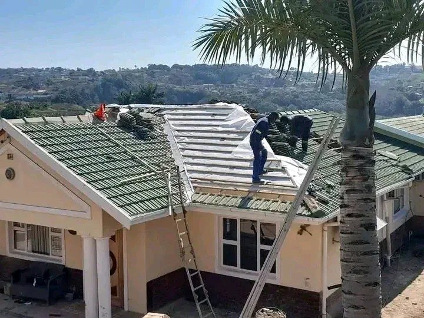

Straight away
- Put a bucket under the drip and move furniture and electronics away
- Switch off lights or plugs near wet ceiling boards
- Take photos of the stain and the roof above it
- Don't climb on a wet roof yourself
- WhatsApp us the photos and your address
Where leaks usually start
Cracked or slipped tiles, loose ridge tiles, rusted screws and open joins on IBR sheets, and old flashings around chimneys, geysers and walls. The water often travels before it drips, so the stain is not always under the leak.
Repair, seal or waterproof?
One or two leaks: replace the broken tiles and seal the spot. Many small leaks: waterproof the whole roof. Rotten battens, perished underlay or leaks that keep moving: strip the roof, put down new membrane and battens, and re-tile. Moss and lichen holding water: high-pressure clean first.
How we fix it


Questions
Why is the stain on my ceiling not under the leak?
Water runs along the roof sheets, battens and ceiling boards before it drips, so the stain can be a metre or more from where the water gets in.
Can I just paint over a leaking roof?
No. Paint on its own doesn't close cracks, open joins or broken tiles. Fix and seal the leaks first, then paint or waterproof the whole roof.
Should I repair, waterproof or re-roof?
One or two leaks: replace the broken tiles and seal the spot. Many small leaks: waterproof the whole roof. Rotten battens or leaks that keep moving: strip and re-roof.
How fast can you come out?
WhatsApp a photo and your address to 084 047 1950. [Leonard to confirm response time.]